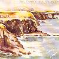

Celtic Lyrics Corner > Artists & Groups > Tannahill Weavers > Land Of Light > The Scottish Settler's Lament
|  | The Scottish Settler's Lament |
| Credits : | Traditional; lyrics by Alexander Gleninning; arranged by the Tannahill Weavers |
| Appears On : | Land Of Light |
| Language : | Scots-English |
Lyrics :
Awa' wi' Canada's muddy creeks and Canada's fields of pine
This land of wheat's a goodly land, but oh it is not mine
The heathy hill, the grassy dale, the daisy-spangled lea
The purling burn and craggy linn old Scotland's glens give me
Oh I would like tae hear again the lark on Tinnie's hill
Or see the wee bit gowanie that blooms beside the rill
Like banished Swiss who views afar his Alps with longing e'e
I gaze upon the morning star that shines on my country
No more I'll win by Eskdale Glen or Pentland's craggy combe
Those days can ne'er come back again of thirty years that's gone
But fancy oft ae midnight hour will steal across the sea
And yester eve in a pleasant dream I saw the old country
Each well-known scene that met my view brought childhood's joys to mind
The blackbird sang on Tushie Linn, the song he sang, Lang Syne
But like a dream time flies away, again the morning came
And I awoke in Canada three thousand miles frae hame
Awa' wi' Canada's muddy creeks and Canada's fields of pine
This land of wheat's a goodly land, but oh it is not mine
The heathy hill, the grassy dale, the daisy-spangled lea
The purling burn and craggy linn old Scotland's glens give me